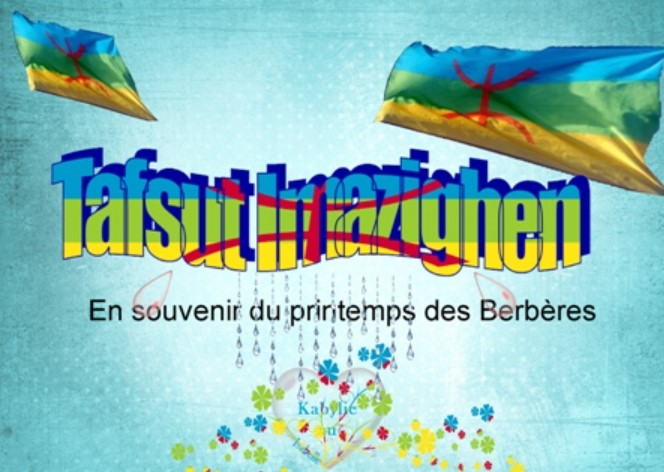

Les Amazighs, ou Berbères, sont un peuple autochtone d'Afrique du Nord avec une riche tradition culturelle et un patrimoine immatériel profondément ancré dans leur histoire. Parmi leurs traditions les plus significatives figurent Yennayer, le printemps berbère (Tafsut n Imazighen), ainsi que diverses autres fêtes et pratiques.
Yennayer est le Nouvel An berbère, célébré le 12 janvier selon le calendrier julien. Les festivités de Yennayer sont marquées par des repas festifs où les plats traditionnels abondent, tels que le couscous et la galette de semoule. Les familles se réunissent pour partager un repas, symbolisant l'abondance et la solidarité. Les maisons sont décorées et les gens portent leurs plus beaux vêtements traditionnels.

Le printemps bérbère, ou Tafsut n Imazighen, est une fête célébrée en 20 Avril, coïncidant souvent avec l'équinoxe de printemps. Cette période est associée à la renaissance de la nature et est marquée par des festivités en plein air, des danses et des chants. Les Amazighs célèbrent cette saison en organisant des rassemblements communautaires où ils chantent et dansent autour de feux de joie, symbolisant la lumière et la chaleur du printemps qui arrive.
L'artisanat est également une partie intégrante de la culture amazigh. Les tapis, les poteries, les bijoux et les textiles sont souvent fabriqués selon des techniques ancestrales et sont décorés de motifs géométriques et symboliques. Ces objets sont non seulement des éléments utilitaires, mais aussi des expressions artistiques qui racontent des histoires et transmettent des savoir-faire.
retournez a la page principale